ライブは、その日だけのものじゃない。
「行きたい」と思った瞬間から、当日を指折り数えて、毎日をわくわく過ごす。そしてライブで爆発し、その後も余韻にひたって——また次へ。その“ぜんぶ”が、ライブの楽しみ。
そして、その熱は一人のものじゃない。同じ夜、同じ箱にいた仲間と参戦履歴を見せ合えば、言葉より早く「この人とは合う」が伝わる。ライブ好きは、“参戦履歴で恋に落ちる”。
行きたいと思った瞬間から、当日、余韻、振り返りまで。ライブを“点”で区切らず、前後を含めた一続きの体験として残す。申し込んだ日から、もう始まっている。
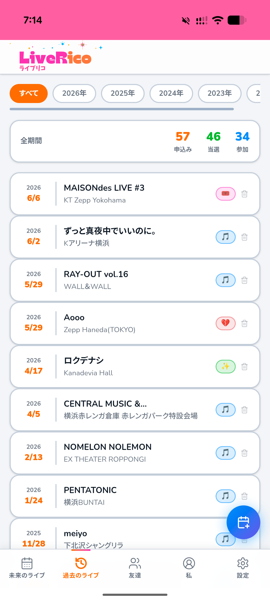
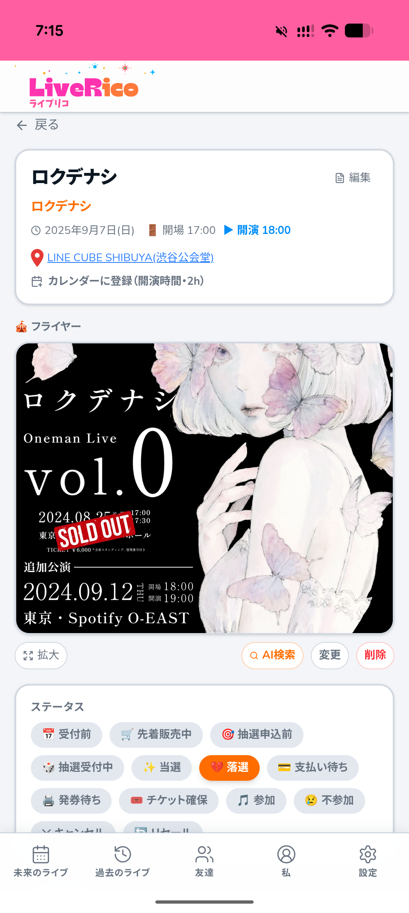
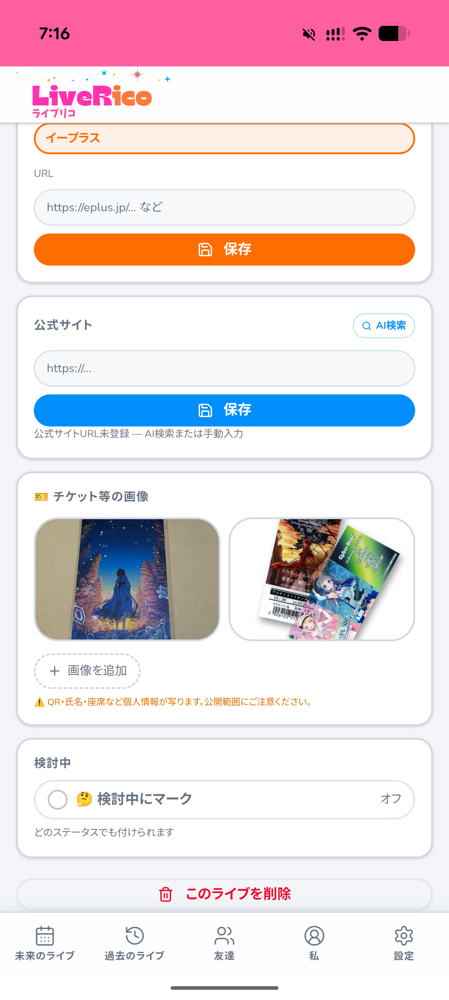
抽選に申し込み、当落にドキドキし、入金して、発券して、いよいよ当日。13種ステータスと期限管理で、その高鳴りを可視化する。当落や支払の見落としで、楽しみが悔しさに変わる——そんな取りこぼしは、もう起きない。
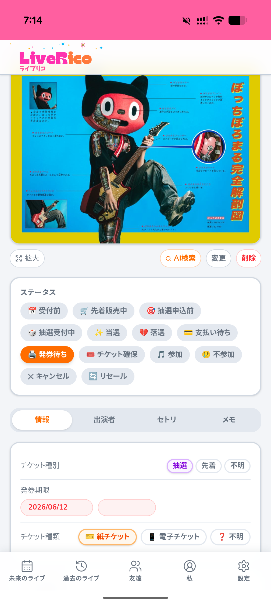
チケットメールから過去の参戦をAIが自動復元（1691件走査→候補66件）。「申し込んだの、忘れてた」をなくす。取得するのはライブチケットのメールだけ（スポーツ・イベント等は対象外）。
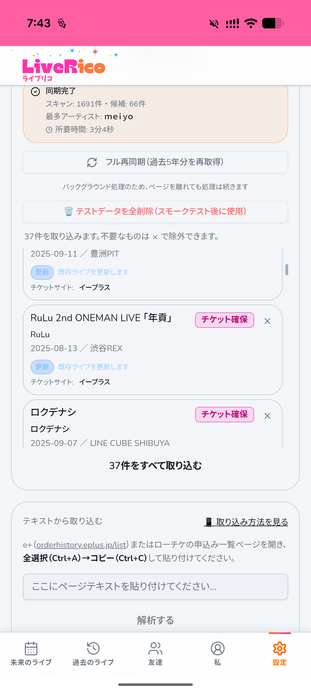
紙・電子チケットの別、発券情報、チケットサイトリンク、公式サイトのAI検索まで。当日に必要なものが、ひとつの画面に集まる。
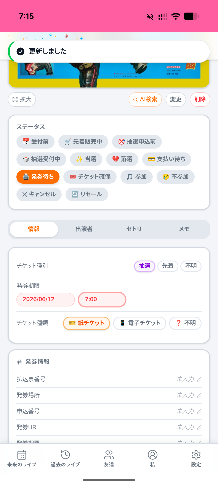
AIが公式フライヤーを自動で探して添付。ライブへの期待も記録の密度も濃くなり、当日までのカウントダウンがもっと楽しくなる。
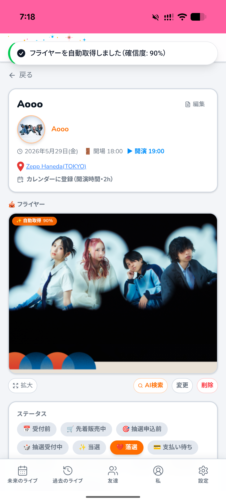
出演者のアーティスト写真を一覧表示。初めての対バンでも、誰が出るのかをAIが自動取得し、当日への期待を育てる。発見と再燃の入口。
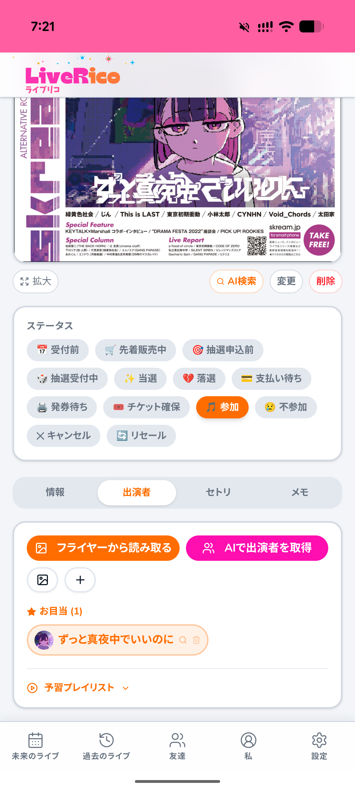
出演者の代表曲をまとめて再生し、当日までにじっくり予習できる。各曲は自分の音楽サービス/YouTubeへ。さらにその予習プレイリストは、友達と見せ合える。知らなかったアーティストを教え合い——新しい“好き”が増えていく。
未来のライブを一覧に。「あと4日」「今日！」——日が近づくほど、そわそわと高鳴りが増していく。そして迎えた当日、画面はクラッカーで祝福する。「準備は整った」。行く前のワクワクが、ここで最高潮に達する。
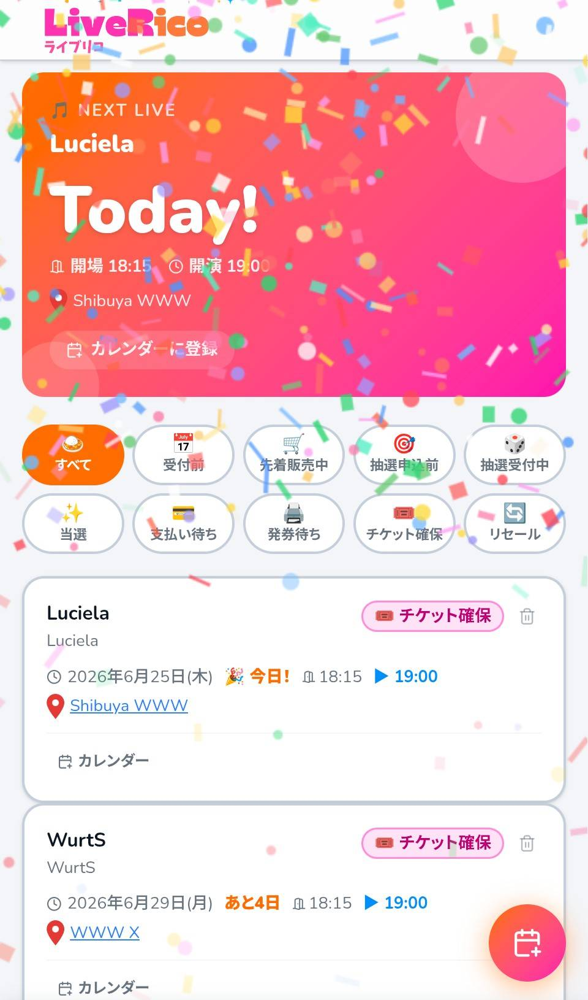
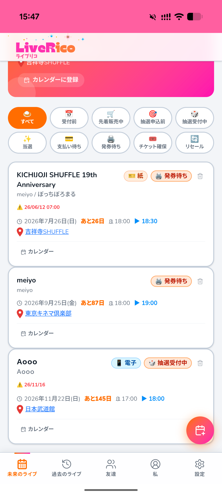
開場・開演まで自動で取得し、Googleカレンダーにワンタップ。「行きたい」と思ったその瞬間を、確かな予定に変える。当日を待つ時間さえ、愛おしくなる。
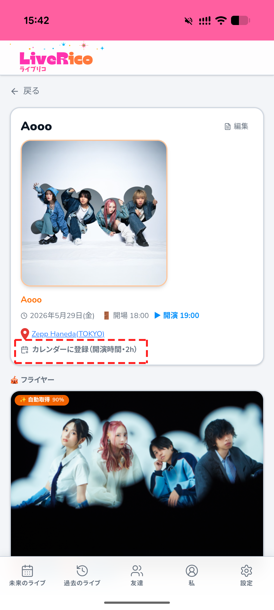
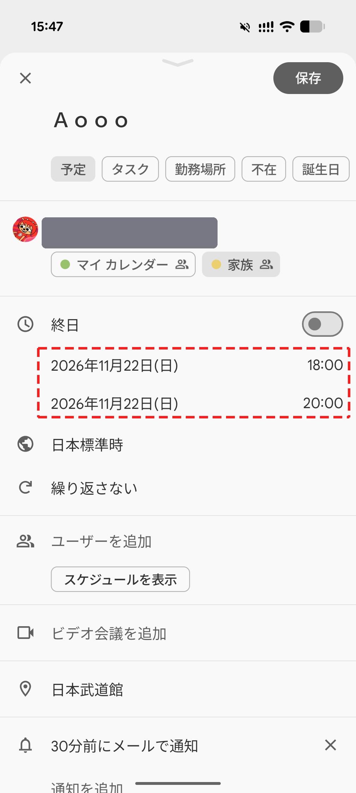
会場の地図を登録しておけば、迷う時間に心を削られない。足取りは軽く、気持ちはまっすぐ開演へ。
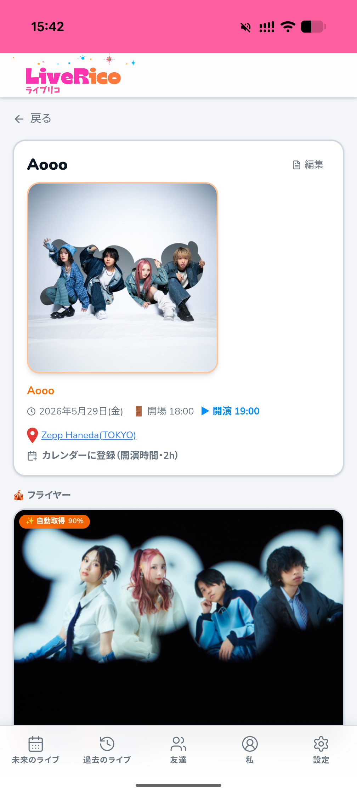
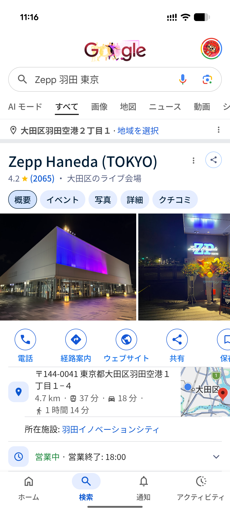
半券、物販、会場の風景。チケットも思い出もグッズも、複数の画像で残し、“その夜”ごと手元に置く。
参加ライブ数・アーティスト数・参加した都道府県数を自動集計。自分がどれだけの夜を、どれだけの土地で過ごしてきたか——積み重ねが一目で見える。
その夜のセットリストを記録し、各曲を音楽サービスやYouTubeへリンク。あの日の高揚を、曲順そのままに聴き返す。余韻が、次のライブへの渇望に変わる。
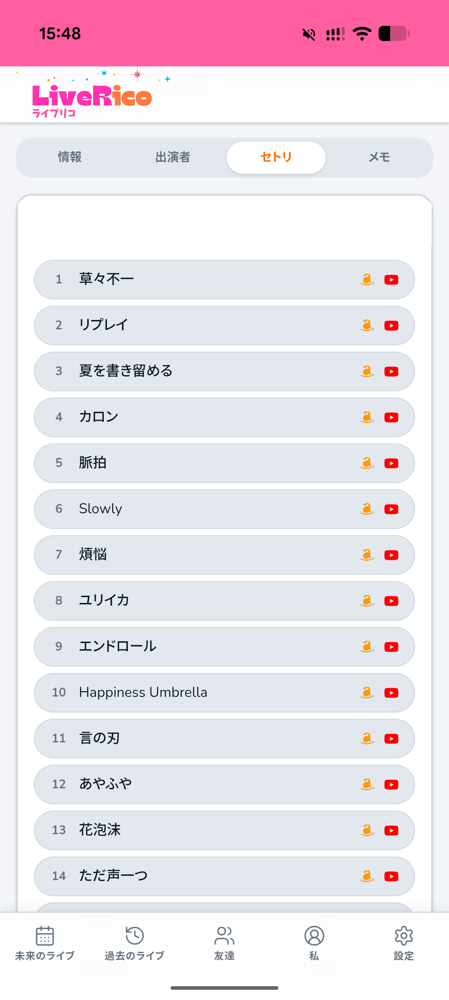
参戦履歴を見せ合えるプロフィール。好きなアーティスト、通った現場、浴びてきた熱量——リストを見せるだけで「あ、この人とは合う」が一瞬で伝わる。音楽好きは、言葉より先に、リストで分かり合える。
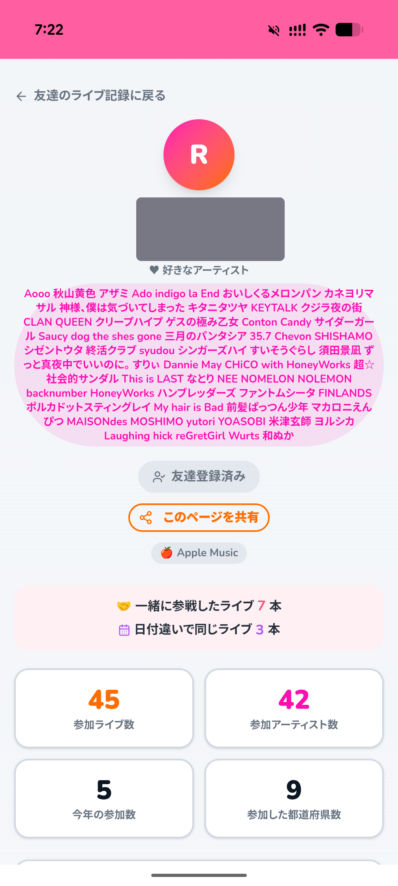
友達との参戦の重なりを可視化（同じライブ／一緒に参戦／同フェス別日）。「同じ夜、同じ箱にいた」「あのフェス、別の日に来てた」——重なりが見えた瞬間、ただの知り合いが、特別な誰かに変わる。同じ音楽を、同じ熱量で浴びてきた者同士。参戦履歴は、人と人が深くつながり、惹かれ合うための入口になる。これがLiveRicoの核。
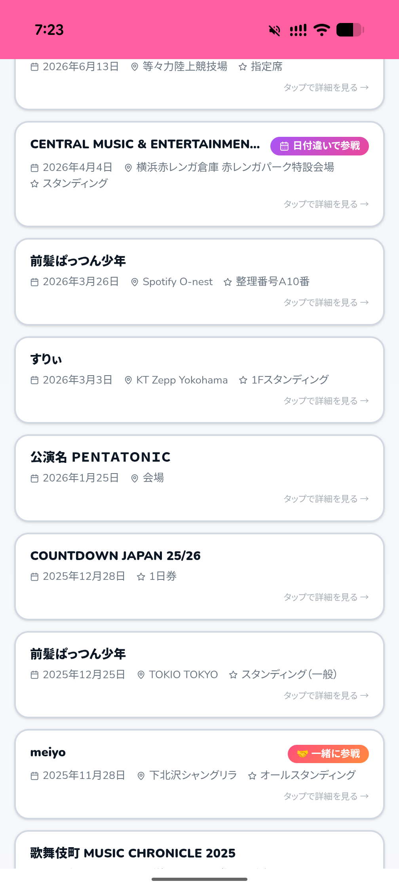
好きなアーティストを登録すれば、新しいライブ情報が向こうからやってくる。未来に網を張り続け、SNSより先に教えてくれる。「気づいた時には売り切れ」——その悔しさを、もう繰り返さない。チケットサイトへ直接リンクし、その場で申込・購入へ。